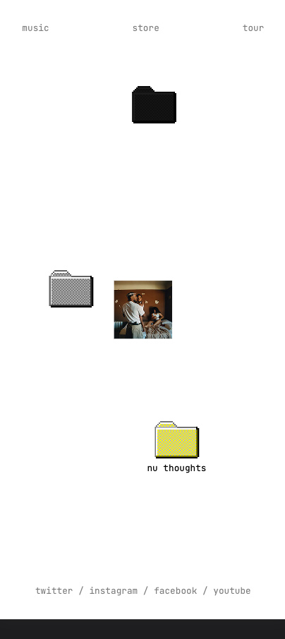
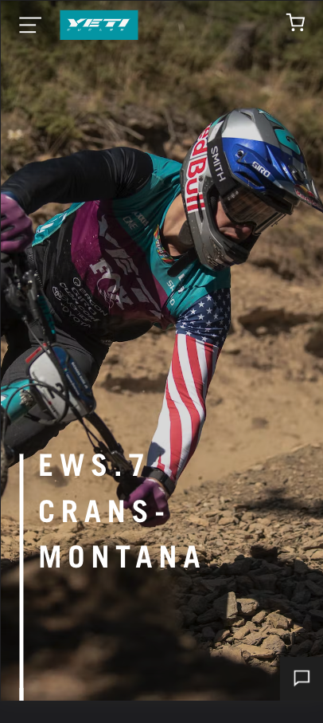

White Space and Clean Design
Kendrick Lamar
oklama.com This whole site has a really minimal design. It is clean and not cluttered. I like how much space it has to breath. It isn't packed full of distractions. This makes it really easy to navigate and find things.
Visual Hierarchy
Moment Skis
momentskis.com
The very first thing you see is what they want you to see. It highlights their flagship model ski and piques your interest. It makes you want to click and learn more about it. After that, less important things come next and so on. This makes it a lot easier to navigate the website. It has a subconcious organization so you don't have to problem solve to find things.
Rule of thirds
Yeti Bicycles
yeticycles.com It isn't exactly split into thirds but the main picture takes up at least 60% of the screen. All you can see is an awesome shot of someone using their bikes. In the bottom third is a link to learn more about what is happening in the picture. This type of design is used throughout the site and it works well. It makes it feel very professional an well put together.